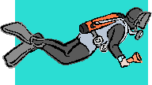

IMPORTANT: This website is moving! Our new home is NWDistrictScouts.com. Please update your bookmarks.
Northwest District
Erie Shores Council, BSA
Welcome to the Northwest District Website!
To find out who, what, when, and where, click on the links to the left!
Information on Soaring Eagle Run, Clean Your Streams, NW District Fall
Camporee, Scout Star Party, JOTA, Construction City and Catholic Camporee
have been added to the Events page.
Names of the 2013 District award winners have been added to the Awards page.
Instructions on RECORDING SERVICE HOURS in the Journey to Excellence online system can be found here.
|
Boy Scout Scuba Diving Programs are being offered by Aqua Hut Dive Center throughout the year. Boys can earn either the Scuba, BSA activity patch or the new Scuba Diving Merit Badge. A flier with more information can be found here. |
 |
Local shooting range, WR Hunt Club in Clyde, OH, is welcoming Boy Scouts, Venturers and their families to experience the joy of target shooting. More info can be found here.
Do you have a Boy Scout interested in the Surveying Merit Badge? Then Bryan Ellis would like to help you out! A flier with contact info can be found here.
Den Leader & Pack Meeting Resource Guide available on-line
As you gear up for another great year of Cub Scouting, National has made the
guide freely available on-line to assist in planning a spectacular year!
The Resource Guide is available
here.
Cornell University has a fun opportunity for Troops & Packs to learn about
common birds in the city while participating in a study. Participation
could help with Cub Scout advancement/electives or Boy Scout merit badges.
A flier
with more info is available
here.
- Home
- Calendar
- District News
- Units/Joining
- District Leadership & Committees
- District/Council Events
- Training Opportunities
- District Awards
- Leader Resources
- OA - NW Chapter
- Contact Webmaster
Files on site are saved
in PDF format